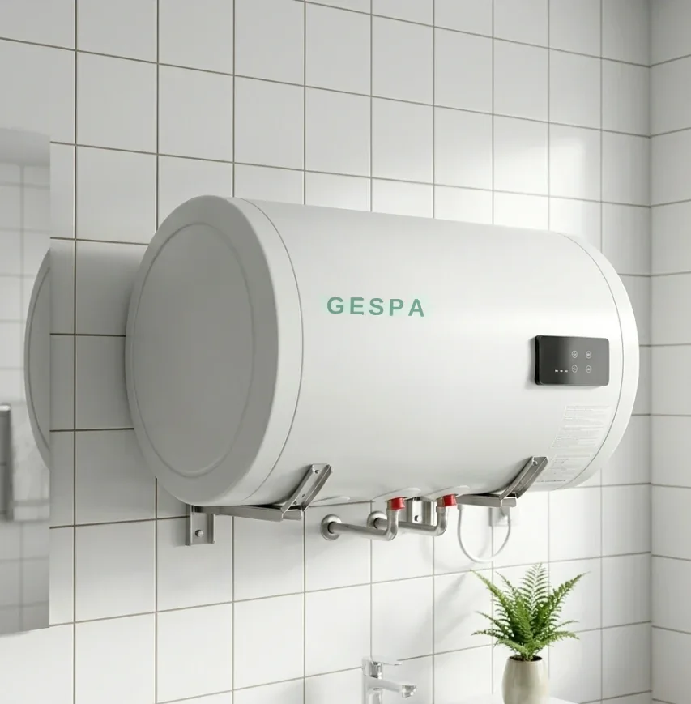
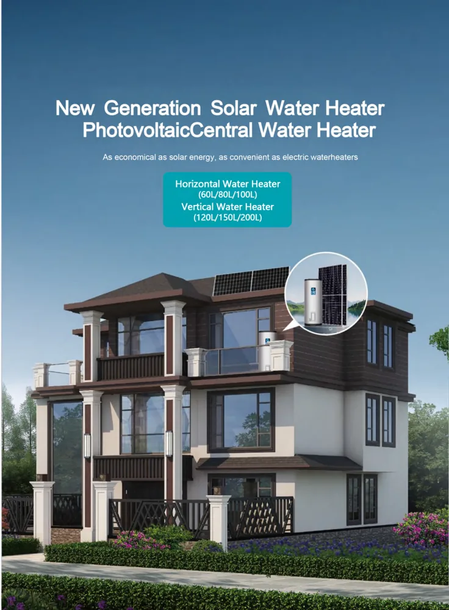
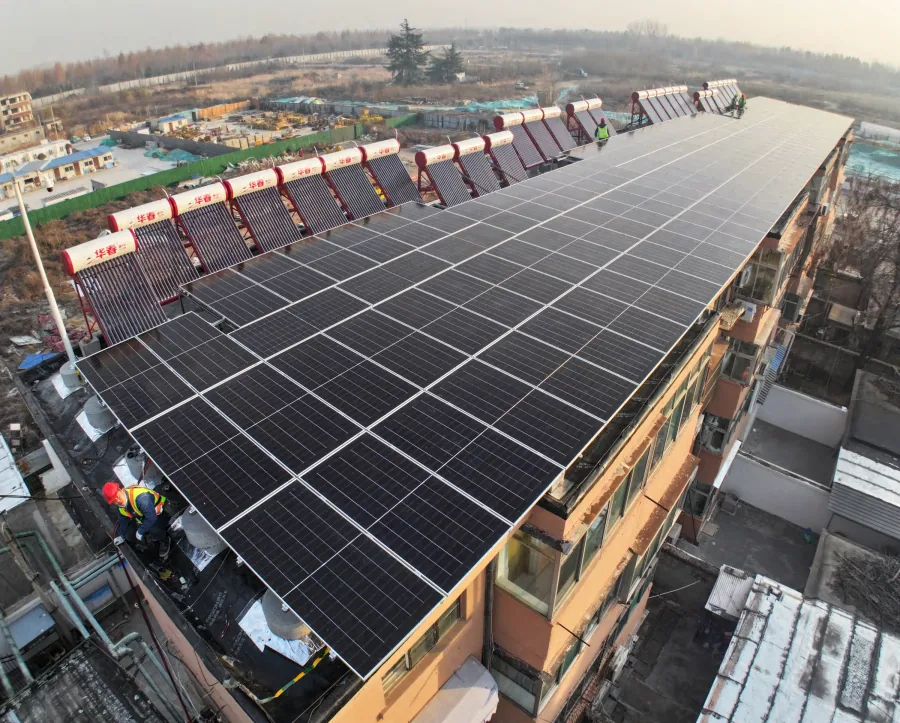
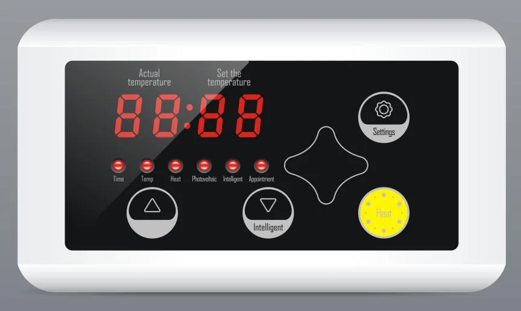

Faturanız düşer
Güneşli günlerde su bedava ısınır; sıcak su için ödediğiniz elektrik en aza iner.
Yeni nesil PV güneş su ısıtıcı ile musluğunuzdan sıcak su hiç bitmesin. Güneşli günlerde su bedava ısınır; hava kapalıyken sistem otomatik devreye girer. Faturanız düşer, eviniz rahat eder.
Monokristal güneş panelleri suyu güneş enerjisiyle ısıtır; akıllı GF-20 kontrol cihazı sıcaklığı yönetir. Güneşsiz günlerde sistem otomatik olarak şebeke (AC) ısıtmaya geçer — termosifonun rahatlığı, güneşin ekonomisi.
Teknik detayların ötesinde, günlük hayatınızda hissedeceğiniz farklar.
Güneşli günlerde su bedava ısınır; sıcak su için ödediğiniz elektrik en aza iner.
Hava kapalıyken sistem otomatik şebekeye geçer; sabah akşam kesintisiz sıcak su.
Akıllı GF-20 kontrol her şeyi yönetir; sıcaklığı ayarlayın, gerisini sisteme bırakın.
Donma, aşırı ısınma ve kuru çalışma korumalarıyla güvenli; daha az karbon ayak izi.
Su sıcaklığını, saati ve ısıtma modunu yöneten akıllı kontrol paneli. ±1°C ölçüm ve kontrol hassasiyetiyle konfor ve güvenlik.
Ailenizin sıcak su ihtiyacına göre 60 L'den 150 L'ye kadar emaye iç tanklı modeller. Fiyatlar bilgilendirme amaçlıdır; kesin teklif ücretsiz keşifle netleşir.
| Kapasite | PV gücü (DC) | Boyut (mm) | AC güç (kW) | İç tank | Fiyat |
|---|---|---|---|---|---|
| Modeller yükleniyor… | |||||




Evet. Bulutlu/yağmurlu havalarda veya gece, sistem su sıcaklığına göre otomatik olarak şebeke (AC) ısıtmaya geçer ve yıl boyu kesintisiz sıcak su sağlar.
Hane halkı sayısına göre 60–150 L modeller mevcuttur. 1–2 kişi için 60–80 L, 3–4 kişi için 100–120 L, 5+ kişi için 150 L önerilir.
Güneşli günlerde ısıtma büyük ölçüde bedavadır; geleneksel elektrikli termosifona göre önemli tasarruf sağlar. Kesin değer kullanım ve bölgeye göre değişir.
Çatı/teras entegre montaj ekibimizce yapılır. Emaye iç tank ve A-marka ekipmanla uzun ömür sunulur; detaylar ücretsiz keşifte netleşir.
Ücretsiz keşif ve şeffaf teklif için bize ulaşın.